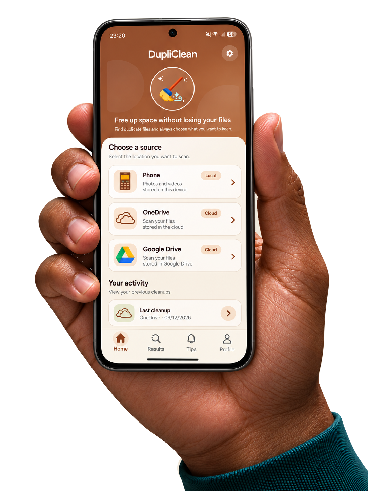
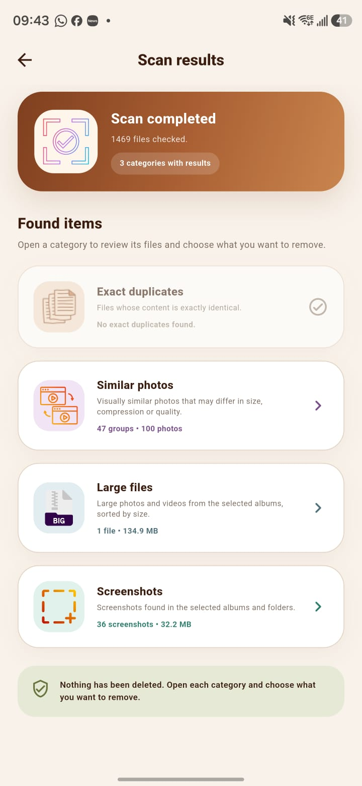

Doublons exacts
Repérez les fichiers dont le contenu est identique.
DupliClean compare des informations comme la taille et les empreintes des fichiers, calculées sur Android ou fournies par le service cloud.
Moins de doublons. Plus de place pour ce qui compte !
Trouvez. Supprimez. Respirez.

Doublons, photos similaires, fichiers volumineux : DupliClean vous aide à faire le tri. Vous choisissez quoi supprimer.
↗ 128 doublons repérés
● Photos2,4 Go
● Vidéos640 Mo
● Documents160 Mo
✓ Vous choisissez quoi supprimer
● ComparerVos fichiers
● ChoisirLes copies
● ConfirmerLa sélection

CAPTURE DE L’APPLICATION · EXEMPLE DE RÉSULTATSOuvrez une catégorie pour examiner les fichiers détectés et choisir ce que vous souhaitez retirer. À la fin du scan, rien n’a encore été supprimé.
Comment ça marcheRepérez les fichiers dont le contenu est identique.
DupliClean compare des informations comme la taille et les empreintes des fichiers, calculées sur Android ou fournies par le service cloud.
Retrouvez les photos qui se ressemblent visuellement.
La comparaison s’appuie sur des miniatures. La similarité reste une estimation : vérifiez les résultats avant de choisir les photos à supprimer.
Identifiez les fichiers qui méritent un peu de tri.
Selon la source et la fonctionnalité utilisée, DupliClean repère les fichiers volumineux et les captures d’écran, et estime l’espace récupérable.
Vous choisissez les fichiers et confirmez leur suppression.
Les fichiers locaux ne sont pas envoyés sur un serveur du développeur pour l’analyse. Aucune copie permanente des fichiers ou résultats n’y est conservée.
C’est vous qui décidez quoi supprimer !
DupliClean ne recherche pas seulement les doublons : le même scan vous aide à repérer plusieurs catégories de fichiers à examiner.
Sélectionnez les fichiers autorisés sur votre appareil Android, votre compte OneDrive ou votre compte Google Drive.
Selon la source et les autorisations accordées, DupliClean recherche les doublons exacts, les photos visuellement similaires, les fichiers volumineux et les captures d’écran.
Ouvrez chaque catégorie, vérifiez les fichiers proposés et choisissez ceux à conserver ou à supprimer. Rien n’est supprimé automatiquement.
Aucun compte DupliClean distinct à créer. Utilisez les médias autorisés sur Android ou vos comptes Microsoft et Google existants. Les fonctions disponibles dépendent de la source et des autorisations.
Selon la source et les accès autorisés
Photos et vidéos autorisées · Analyse locale
Connexion et fichiers gérés par Microsoft
Connexion et fichiers gérés par Google
DupliClean peut conserver vos préférences et l’historique des nettoyages localement sur votre appareil.
Gestion et suppression des données ↗Supprimez une entrée, sélectionnez-en plusieurs ou effacez tout l’historique. Cela retire uniquement les informations de nettoyage, pas les fichiers de votre téléphone ou du cloud.
Dans les paramètres Android, ouvrez les informations de DupliClean puis effacez ses données ou son stockage. Désinstaller l’application retire aussi ses préférences et autres données locales.
Modifiez l’accès aux médias dans les paramètres Android. Pour OneDrive et Google Drive, retirez l’accès de DupliClean dans les paramètres de sécurité ou de confidentialité du compte concerné.
Non. Les résultats vous sont présentés avant toute suppression. Vous choisissez les fichiers à conserver ou à supprimer, puis confirmez l’opération.
Selon la source et les fonctions utilisées : les doublons exacts, les photos visuellement similaires, les fichiers volumineux et les captures d’écran. Les photos similaires sont des suggestions à vérifier, pas une garantie que les images sont identiques.
Non. Il n’y a pas de compte DupliClean distinct. Pour OneDrive ou Google Drive, vous utilisez votre compte existant et vous vous authentifiez auprès de Microsoft ou Google.
Les fichiers locaux ne sont pas envoyés vers un serveur du développeur pour l’analyse. DupliClean n’y conserve pas de copies permanentes de vos fichiers, miniatures ou résultats. Pour le cloud, les données nécessaires sont échangées avec Microsoft ou Google ; certaines miniatures peuvent être téléchargées temporairement pour la comparaison.
OneDrive traite la demande selon ses règles de suppression et de corbeille. Google Drive déplace le fichier vers la corbeille lorsque cette opération est prise en charge. La possibilité de restauration dépend de la source et n’est pas garantie par DupliClean.
Non. Supprimer une ou plusieurs entrées de l’historique retire uniquement ces informations locales. Cela ne supprime pas les fichiers correspondants sur Android, OneDrive ou Google Drive.
Oui. Les versions récentes d’Android permettent un accès complet ou limité à certains médias sélectionnés. Vous pouvez modifier cet accès dans les paramètres Android. Les autorisations cloud se retirent depuis les paramètres de votre compte Microsoft ou Google.
Français, anglais, italien, espagnol, allemand et portugais. Votre préférence de langue peut être enregistrée localement sur votre appareil.
Non. Elle utilise uniquement des exemples fictifs. Elle ne se connecte à aucun compte, ne lit aucun de vos fichiers et n’exécute aucune suppression réelle.
Libérez votre espace simplement.
Disponible uniquement sur Android, via Google Play.
Français · English · Italiano · Español · Deutsch · Português